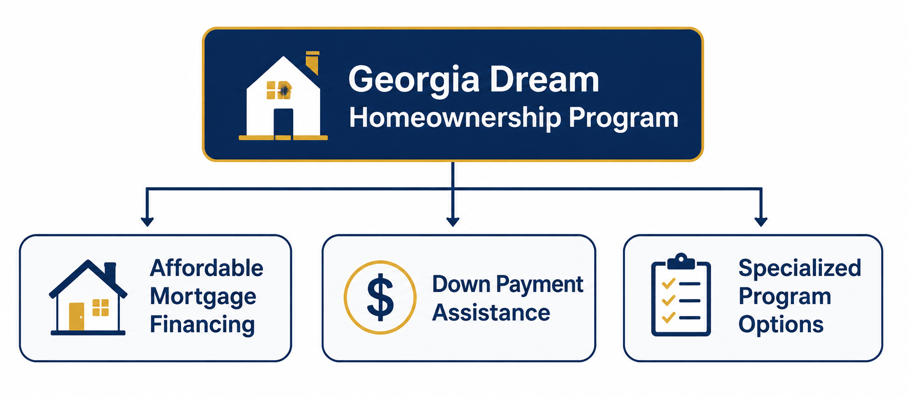
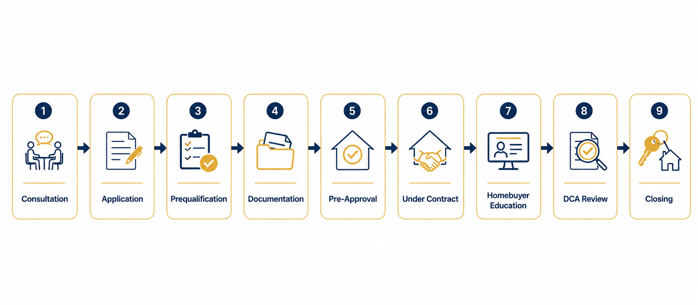
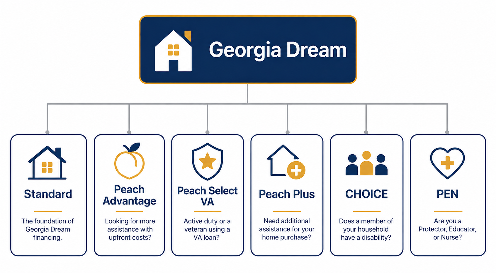
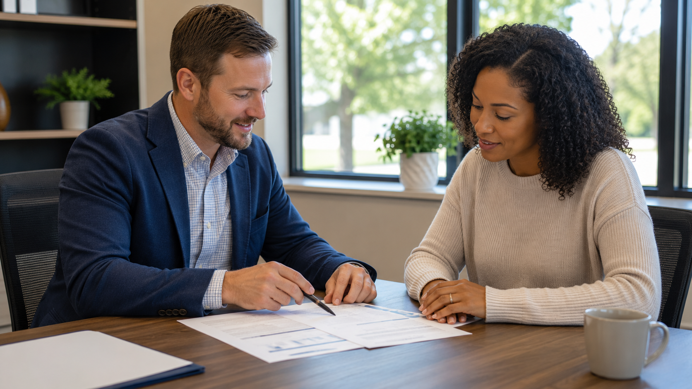
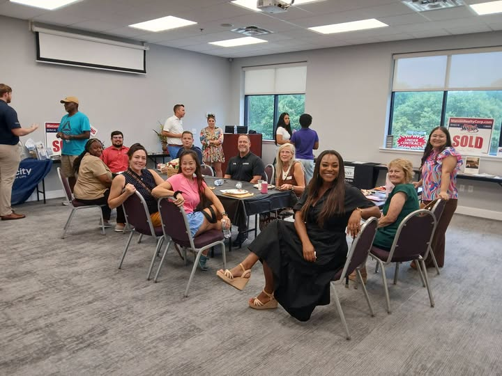

Georgia Dream Programs
Georgia Dream Homeownership Program: Everything You Need to Know
Buying a Home in Georgia? Here's What You Should Know About Georgia Dream
Georgia Dream Programs
Buying a Home in Georgia? Here's What You Should Know About Georgia Dream
For many people, the biggest obstacle to buying a home isn't qualifying for a mortgage, it's saving enough money for the down payment and closing costs.
Where do I start? Do I qualify? Is there a program that can help? These are questions I hear every week, and they're exactly what this guide is designed to answer.
The Georgia Dream Homeownership Program was created to help eligible homebuyers overcome those challenges by offering affordable mortgage financing and, for many buyers, down payment assistance.
Whether you're purchasing your first home, relocating to Georgia, or simply exploring your financing options, understanding how Georgia Dream works can help you decide whether it's worth considering.
This guide provides an overview of the program, explains who may qualify, and introduces the different Georgia Dream options available.
The Georgia Dream Homeownership Program is administered by the Georgia Department of Community Affairs (DCA) to help eligible buyers purchase a home in Georgia. Depending on your situation, the program may provide affordable mortgage financing, down payment assistance, or both. Georgia Dream works with several mortgage types, including FHA, VA, USDA, and conventional loans through participating lenders.
Georgia Dream is a statewide homeownership program designed to make buying a home more accessible for eligible buyers.

Rather than being a single loan product, Georgia Dream offers several financing options that may include:
Because every buyer's financial situation is different, the specific Georgia Dream option that's available, and whether it's beneficial, depends on your eligibility, loan type, and home purchase.
For many buyers, down payment assistance can make the difference between buying and not buying. It's also important to understand that Georgia Dream down payment assistance must be repaid. The assistance is provided as a 0% interest second mortgage with no monthly payment. The balance becomes due when you sell the home, refinance the first mortgage, or no longer occupy the property as your primary residence.
As those funds are repaid, they can be used to help future Georgia homebuyers. The Georgia Department of Community Affairs may also offer other assistance programs with different repayment requirements, so the terms of the specific program should always be reviewed with your participating lender.
Georgia Dream can be a great fit for many buyers, including:
Like any mortgage program, Georgia Dream isn't the right choice for every buyer. Income limits, purchase price limits, property eligibility, and other requirements all play a role in determining whether the program is a good fit.
Although every home purchase is unique, the process generally follows these steps:

One of the biggest advantages buyers can give themselves is starting the mortgage process before they begin shopping for a home.
Many of the documents required for a Georgia Dream loan can be collected and reviewed before you start shopping. That means fewer surprises, less stress, and more time to address any questions before closing deadlines begin.
On my team, we work to collect and review documentation early so that once you're under contract, we can focus on moving your loan toward closing instead of chasing paperwork.
One question I hear frequently is:
"Can we still close in 30 days?"
Sometimes the answer is yes.
However, it's important to understand that Georgia Dream loans include an additional review beyond your lender's underwriting process.
After your lender approves the loan, the Georgia Department of Community Affairs also reviews the file before it can move to closing. Because of this additional step, closing timelines may be affected by:
While no lender can control every part of the timeline, preparing documentation early and anticipating the additional review helps reduce avoidable delays and keeps everyone working toward the same closing goal.
Georgia Dream offers several programs and program options designed to meet different homebuyer needs.

These include:
Each program was created for a different purpose.
Some focus on down payment assistance, while others offer subsidized interest rates for eligible buyers. Choosing the right program depends on your financial situation, eligibility, and long-term goals, which is why it's helpful to review your options before beginning your home search. See the full program comparison for details on each.
Depending on eligibility, Georgia Dream may be paired with several mortgage types, including:
Each financing option has different qualification guidelines, down payment requirements, and long-term considerations.
No. While many buyers using Georgia Dream are purchasing their first home, certain targeted areas and program guidelines allow some repeat buyers to qualify.
No. Some Georgia Dream programs include down payment assistance, while others focus on providing more approachable financing through subsidized interest rates. Eligibility depends on the specific program.
Yes. Eligible veterans and active-duty service members may qualify for certain Georgia Dream options, including the Peach Select VA option.
Every purchase is different, but many Georgia Dream transactions close in approximately 30 to 45 days. Because every loan also receives a compliance review by the Georgia Department of Community Affairs, timing depends on document completeness, review volume, and other factors outside the lender's control.
Yes. Georgia Dream down payment assistance is typically provided as a 0% interest second mortgage with no monthly payment. It generally becomes due when you sell the home, refinance the first mortgage, or no longer occupy the property as your primary residence. Some Georgia Dream programs may have different repayment requirements.
This article is part of the Georgia Dream programs covered on my Down Payment Assistance page, where you can compare every Georgia Dream option side by side.
If you're just beginning your research, these are a great next step:

Every homebuyer's situation is different.
If you're wondering whether Georgia Dream is a good fit, I'd be happy to talk through your goals, explain how the program works, and help you understand the financing options available to you. Whether Georgia Dream ends up being the right path or another option makes more sense, my goal is to help you make an informed decision.

Throughout the year, I participate in local homebuyer education events alongside real estate agents, insurance professionals, closing attorneys, and other housing experts. These events provide an opportunity to ask questions, learn about the homebuying process, and connect with trusted local professionals in a relaxed, no-pressure environment.
Program guidelines occasionally change. For the latest official information, including current program documents and approved homebuyer education resources, visit the Georgia Department of Community Affairs' Georgia Dream website.
The Georgia Dream Homeownership Program has helped thousands of buyers achieve homeownership, but it isn't a one-size-fits-all solution.
The best financing strategy depends on your goals, your eligibility, and the home you're planning to purchase.
The earlier you begin learning about your financing options, the more confident you'll be when it's time to make an offer.
Whether you're just beginning your research or preparing to make an offer, understanding how Georgia Dream works is the first step toward making a confident, informed decision.
Let's review your goals, eligibility, and available financing options so you can decide what makes sense for your home purchase.
Loan programs, eligibility requirements, interest rates, and closing costs vary based on individual circumstances, credit profile, property type, and market conditions. Every mortgage scenario should be reviewed on a case-by-case basis.